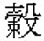
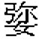
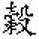

——一九二三年十二月二十六日在北京女子高等师范学校文艺会讲
我今天要讲的是“娜拉走后怎样？”
伊孛生[480]是十九世纪后半的瑙威的一个文人。他的著作，除了几十首诗之外，其余都是剧本。这些剧本里面，有一时期是大抵含有社会问题的，世间也称作“社会剧”，其中有一篇就是《娜拉》。
《娜拉》一名Ein Puppenheim，中国译作《傀儡家庭》。但Puppe不单是牵线的傀儡，孩子抱着玩的人形[481]也是；引申开去，别人怎么指挥，他便怎么做的人也是。娜拉当初是满足地生活在所谓幸福的家庭里的，但是她竟觉悟了：自己是丈夫的傀儡，孩子们又是她的傀儡。她于是走了，只听得关门声，接着就是闭幕。这想来大家都知道，不必细说了。
娜拉要怎样才不走呢？或者说伊孛生自己有解答，就是Die Frau vom Meer，《海的女人》，中国有人译作《海上夫人》的。这女人是已经结婚的了，然而先前有一个爱人在海的彼岸，一日突然寻来，叫她一同去。她便告知她的丈夫，要和那外来人会面。临末，她的丈夫说，“现在放你完全自由。（走与不走）你能够自己选择，并且还要自己负责任。”于是什么事全都改变，她就不走了。这样看来，娜拉倘也得到这样的自由，或者也便可以安住。
但娜拉毕竟是走了的。走了以后怎样？伊孛生并无解答；而且他已经死了。即使不死，他也不负解答的责任。因为伊孛生是在做诗，不是为社会提出问题来而且代为解答。就如黄莺一样，因为他自己要歌唱，所以他歌唱，不是要唱给人们听得有趣，有益。伊孛生是很不通世故的，相传在许多妇女们一同招待他的筵宴上，代表者起来致谢他作了《傀儡家庭》，将女性的自觉，解放这些事，给人心以新的启示的时候，他却答道，“我写那篇却并不是这意思，我不过是做诗。”
娜拉走后怎样？——别人可是也发表过意见的。一个英国人曾作一篇戏剧，说一个新式的女子走出家庭，再也没有路走，终于堕落，进了妓院了。还有一个中国人，——我称他什么呢？上海的文学家罢，——说他所见的《娜拉》是和现译本不同，娜拉终于回来了。这样的本子可惜没有第二人看见，除非是伊孛生自己寄给他的。但从事理上推想起来，娜拉或者也实在只有两条路：不是堕落，就是回来。因为如果是一匹小鸟，则笼子里固然不自由，而一出笼门，外面便又有鹰，有猫，以及别的什么东西之类；倘使已经关得麻痹了翅子，忘却了飞翔，也诚然是无路可以走。还有一条，就是饿死了，但饿死已经离开了生活，更无所谓问题，所以也不是什么路。
人生最苦痛的是梦醒了无路可以走。做梦的人是幸福的；倘没有看出可走的路，最要紧的是不要去惊醒他。你看，唐朝的诗人李贺[482]，不是困顿了一世的么？而他临死的时候，却对他的母亲说，“阿妈，上帝造成了白玉楼，叫我做文章落成去了。”这岂非明明是一个诳，一个梦？然而一个小的和一个老的，一个死的和一个活的，死的高兴地死去，活的放心地活着。说诳和做梦，在这些时候便见得伟大。所以我想，假使寻不出路，我们所要的倒是梦。
但是，万不可做将来的梦。阿尔志跋绥夫[483]曾经借了他所做的小说，质问过梦想将来的黄金世界的理想家，因为要造那世界，先唤起许多人们来受苦。他说，“你们将黄金世界预约给他们的子孙了，可是有什么给他们自己呢？”有是有的，就是将来的希望。但代价也太大了，为了这希望，要使人练敏了感觉来更深切地感到自己的苦痛，叫起灵魂来目睹他自己的腐烂的尸骸。惟有说诳和做梦，这些时候便见得伟大。所以我想，假使寻不出路，我们所要的就是梦；但不要将来的梦，只要目前的梦。
然而娜拉既然醒了，是很不容易回到梦境的，因此只得走；可是走了以后，有时却也免不掉堕落或回来。否则，就得问：她除了觉醒的心以外，还带了什么去？倘只有一条像诸君一样的紫红的绒绳的围巾，那可是无论宽到二尺或三尺，也完全是不中用。她还须更富有，提包里有准备，直白地说，就是要有钱。
梦是好的；否则，钱是要紧的。
钱这个字很难听，或者要被高尚的君子们所非笑，但我总觉得人们的议论是不但昨天和今天，即使饭前和饭后，也往往有些差别。凡承认饭需钱买，而以说钱为卑鄙者，倘能按一按他的胃，那里面怕总还有鱼肉没有消化完，须得饿他一天之后，再来听他发议论。
所以为娜拉计，钱，——高雅的说罢，就是经济，是最要紧的了。自由固不是钱所能买到的，但能够为钱而卖掉。人类有一个大缺点，就是常常要饥饿。为补救这缺点起见，为准备不做傀儡起见，在目下的社会里，经济权就见得最要紧了。第一，在家应该先获得男女平均的分配；第二，在社会应该获得男女相等的势力。可惜我不知道这权柄如何取得，单知道仍然要战斗；或者也许比要求参政权更要用剧烈的战斗。
要求经济权固然是很平凡的事，然而也许比要求高尚的参政权以及博大的女子解放之类更烦难。天下事尽有小作为比大作为更烦难的。譬如现在似的冬天，我们只有这一件棉袄，然而必须救助一个将要冻死的苦人，否则便须坐在菩提树下冥想普度一切人类的方法[484]去。普度一切人类和救活一人，大小实在相去太远了，然而倘叫我挑选，我就立刻到菩提树下去坐着，因为免得脱下唯一的棉袄来冻杀自己。所以在家里说要参政权，是不至于大遭反对的，一说到经济的平匀分配，或不免面前就遇见敌人，这就当然要有剧烈的战斗。
战斗不算好事情，我们也不能责成人人都是战士，那么，平和的方法也就可贵了，这就是将来利用了亲权来解放自己的子女。中国的亲权是无上的，那时候，就可以将财产平匀地分配子女们，使他们平和而没有冲突地都得到相等的经济权，此后或者去读书，或者去生发，或者为自己去享用，或者为社会去做事，或者去花完，都请便，自己负责任。这虽然也是颇远的梦，可是比黄金世界的梦近得不少了。但第一需要记性。记性不佳，是有益于己而有害于子孙的。人们因为能忘却，所以自己能渐渐地脱离了受过的苦痛，也因为能忘却，所以往往照样地再犯前人的错误。被虐待的儿媳做了婆婆，仍然虐待儿媳；嫌恶学生的官吏，每是先前痛骂官吏的学生；现在压迫子女的，有时也就是十年前的家庭革命者。这也许与年龄和地位都有关系罢，但记性不佳也是一个很大的原因。救济法就是各人去买一本note-book[485]来，将自己现在的思想举动都记上，作为将来年龄和地位都改变了之后的参考。假如憎恶孩子要到公园去的时候，取来一翻，看见上面有一条道，“我想到中央公园去”，那就即刻心平气和了。别的事也一样。
世间有一种无赖精神，那要义就是韧性。听说拳匪[486]乱后，天津的青皮，就是所谓无赖者很跋扈，譬如给人搬一件行李，他就要两元，对他说这行李小，他说要两元，对他说道路近，他说要两元，对他说不要搬了，他说也仍然要两元。青皮固然是不足为法的，而那韧性却大可以佩服。要求经济权也一样，有人说这事情太陈腐了，就答道要经济权；说是太卑鄙了，就答道要经济权；说是经济制度就要改变了，用不着再操心，也仍然答道要经济权。
其实，在现在，一个娜拉的出走，或者也许不至于感到困难的，因为这人物很特别，举动也新鲜，能得到若干人们的同情，帮助着生活。生活在人们的同情之下，已经是不自由了，然而倘有一百个娜拉出走，便连同情也减少，有一千一万个出走，就得到厌恶了，断不如自己握着经济权之为可靠。
在经济方面得到自由，就不是傀儡了么？也还是傀儡。无非被人所牵的事可以减少，而自己能牵的傀儡可以增多罢了。因为在现在的社会里，不但女人常作男人的傀儡，就是男人和男人，女人和女人，也相互地作傀儡，男人也常作女人的傀儡，这决不是几个女人取得经济权所能救的。但人不能饿着静候理想世界的到来，至少也得留一点残喘，正如涸辙之鲋[487]，急谋升斗之水一样，就要这较为切近的经济权，一面再想别的法。
如果经济制度竟改革了，那上文当然完全是废话。
然而上文，是又将娜拉当作一个普通的人物而说的，假使她很特别，自己情愿闯出去做牺牲，那就又另是一回事。我们无权去劝诱人做牺牲，也无权去阻止人做牺牲。况且世上也尽有乐于牺牲，乐于受苦的人物。欧洲有一个传说，耶稣去钉十字架时，休息在Ahasvar[488]的檐下，Ahasvar不准他，于是被了咒诅，使他永世不得休息，直到末日裁判的时候。Ahasvar从此就歇不下，只是走，现在还在走。走是苦的，安息是乐的，他何以不安息呢？虽说背着咒诅，可是大约总该是觉得走比安息还适意，所以始终狂走的罢。
只是这牺牲的适意是属于自己的，与志士们之所谓为社会者无涉。群众，——尤其是中国的，——永远是戏剧的看客。牺牲上场，如果显得慷慨，他们就看了悲壮剧；如果显得觳

[489]，他们就看了滑稽剧。北京的羊肉铺前常有几个人张着嘴看剥羊，仿佛颇愉快，人的牺牲能给与他们的益处，也不过如此。而况事后走不几步，他们并这一点愉快也就忘却了。对于这样的群众没有法，只好使他们无戏可看倒是疗救，正无需乎震骇一时的牺牲，不如深沉的韧性的战斗。
可惜中国太难改变了，即使搬动一张桌子，改装一个火炉，几乎也要血；而且即使有了血，也未必一定能搬动，能改装。不是很大的鞭子打在背上，中国自己是不肯动弹的。我想这鞭子总要来，好坏是别一问题，然而总要打到的。但是从那里来，怎么地来，我也是不能确切地知道。
我这讲演也就此完结了。
注 释
[479] 本篇最初发表于1924年北京女子高等师范学校《文艺会刊》第六期。曾署“陆学仁、何肇葆笔记”。同年8月1日上海《妇女杂志》第十卷第八号转载时，篇末有该杂志的编者附记：“这篇是鲁迅先生在北京女子高等师范学校的讲演稿，曾经刊载该校出版《文艺会刊》的第六期。新近因为我们向先生讨文章，承他把原文重加订正，给本志发表。”
[480] 伊孛生 通译易卜生。参看本卷第62页注〔35〕。
[481] 人形 日语，即人形的玩具。
[482] 李贺（790—816） 字长吉，昌谷（今河南宜阳）人，唐代诗人。一生官职卑微，郁郁不得志。著有《李长吉歌诗》四卷。关于他“玉楼赴召”的故事，唐代诗人李商隐《李贺小传》说：“长吉将死时，忽昼见一绯衣人，驾赤虬，持一版，书若太古篆或霹雳石文者，云：‘当召长吉。’长吉了不能读，歘下榻叩头言：‘阿

老且病，贺不愿去。’绯衣人笑曰：‘帝成白玉楼，立召君为记，天上差乐不苦也。’长吉独泣，边人尽见之。少之，长吉气绝。”[483] 阿尔志跋绥夫（М.П.Арцыбашев，1878—1927） 俄国小说家。他早期的创作带有自由主义色彩，主要描写精神颓废者的生活，有些作品也反映了沙皇统治的黑暗。十月革命后流亡国外，死于华沙。下文所述是他的小说《工人绥惠略夫》中绥惠略夫对亚拉借夫所说的话，见该书第九章。
[484] 这是借用关于释迦牟尼的传说。相传佛教始祖释迦牟尼（约前565—前486）有感于人生的生老病死等苦恼，在二十九岁时立志出家修行，遍历各地，苦行六年，仍未能悟道，后坐在菩提树下发誓说：“若不成正觉，虽骨碎肉腐，亦不起此座。”静思七日，就克服了各种烦恼，顿成“正觉”。
[485] Note-book 英语：笔记簿。
[486] 拳匪 指1900年（庚子）爆发的义和团运动。参加这次运动的主要是山东、直隶一带的农民、手工业者和城市游民。他们采取设拳会、练拳棒及其他迷信方式组织民众。先以“反清灭洋”为口号，后又改为“扶清灭洋”，被清朝统治者利用攻打外国使馆，焚烧教堂。不久即被八国联军和清政府共同镇压。光绪二十六年五月十七日（1900年6月13日）上谕始称他们为“拳匪”，此前的上谕称“义和拳会”。
[487] “涸辙之鲋” 战国时庄子的一个寓言，见《庄子·外物》：“庄周家贫，故往贷粟于监河侯。监河侯曰：‘诺。我将得邑金，将贷子三百金，可乎？’庄周忿然作色曰：‘周昨来，有中道而呼者。周顾视车辙中，有鲋鱼焉。周问之曰：“鲋鱼来，子何为者邪？”对曰：“我东海之波臣也。君岂有斗升之水而活我哉？”周曰：“诺。我且南游吴越之土，激西江之水而迎子，可乎？”鲋鱼忿然作色曰：“吾失我常与，我无所处。吾得斗升之水然活耳，君乃言此，曾不如早索我于枯鱼之肆。”’”鲋鱼，汉许慎《说文解字》：“鲋，鱼名。”据宋人陆佃《埤雅·释鱼》考证，即鲫鱼。
[488] Ahasvar 阿哈斯瓦尔，欧洲传说中的一个补鞋匠，被称为“流浪的犹太人”。
[489] 觳

通作觳觫，恐惧颤抖的样子。《孟子·梁惠王（上）》：“吾不忍其觳觫，若无罪而就死地。”